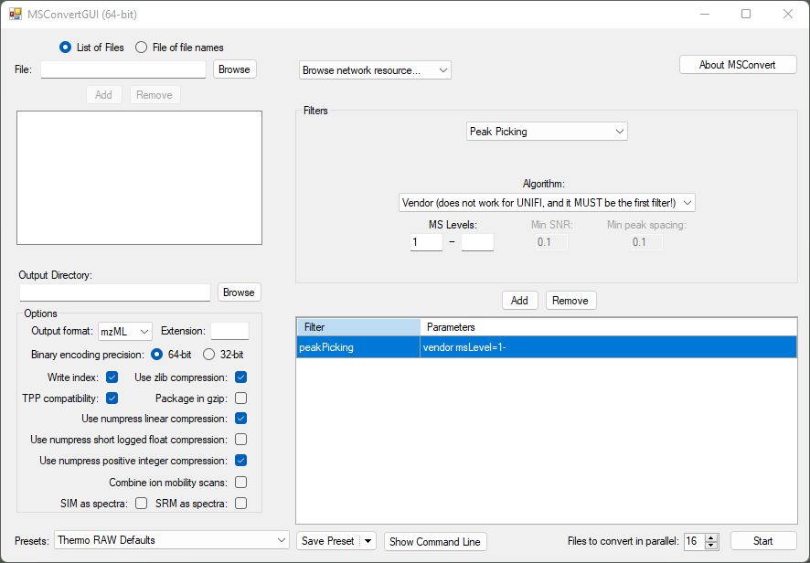

Data handling (supported formats)¶
MZmine supports both open (e.g., .mzML, .mzXML, .imzML, .netCDF, and .aird) and proprietary formats from Thermo Scientific .raw, and Bruker Daltonics .d and .tdf/tsf. All other raw data files from other vendors must be converted into an open format prior to the import. Therefore, a vendor-provided or third-party software can be used.
The recommendations for the data handling are the conversion of the raw data to centroided .mzML data files, except for timsTOF data (native .tdf and .tsf inside the Bruker .d folder), and the conversion of MS imaging data to .imzML, except for the timsTOF fleX MS imaging data.
Data conversion to open formats (.mzML / .imzML)¶
MSConvert (ProteoWizard) to mzML¶
MSConvert supports the conversion of AB SCIEX, Agilent, Bruker, Shimadzu, Thermo Scientific, and Waters raw data. More information about the formats can be found in the ProteoWizard Documentation for Users. Furthermore, profile data can be centroided to reduce the file size and memory consumption, which can be important when processing larger datasets.
Recommended conversion settings for high-resolution MS data to mzML (newer than mzXML). Use 64 bit ** for m/z to retain accuracy. Compression is optional** but reduces the size significantly without much information loss - this might be instrument dependent though.
The peak picking filter needs to be the first in the list - otherwise MSConvert might default to another algorithm than the selected vendor-specific one. Beware that previous versions of MSConvert had the titleMaker filter at the first position and the peak picking algorithm was added manually and the position needed to be switched accordingly to peak picking first.

MSConvert command line interface¶
Example Microsoft windows command to convert all .raw to .mzML. Can be in a .bat-batchfile located together with the raw data files. By default, the m/z is encoded in 64 bit, whereas the intensity is encoded in 32 bit. NumpressPic compresses the intensity, whereas the numpressLinear compresses the m/z and RT and a [toler] can be set. The peakPicking can be set to specific MS levels (here MS1- for multistage fragmentation)
"C:\Users\**USERNAME**\AppData\Local\Apps\ProteoWizard 3.0.22166.28b1b7b 64-bit\msconvert.exe" *.raw --filter "peakPicking true 1-" --zlib --numpressPic --numpressLinear -v -o mzml
pause 1
More details can be found in the ProteoWizard documentation.
ThermoRawFileParser¶
It is used to convert ThermoFisher .raw files into .mgf, .mzML, .parquet. This converter is important if an internal calibrant was used (e.g., EASY-IC). This mass is excluded in the FreeStyle view, whereas MSConvert remains all signals in the mzML, including this. If those masses together with some flagged signals by Thermo, should be removed use this converter with the option --excludeExceptionData.
Example for command line interface with the exclusion of exception data:
"C:\Users\**USERNAME**\AppData\Local\Apps\ThermoRawFileParser\ThermoRawFileParser.exe" *.raw -d=INPUT_DIRECTORY -o="./mzml_ThermoRawFileParser_excl_data/" --excludeExceptionData
pause 1
More details can be found on GitHub.
Bruker: Recalibrated files to the data conversion guide¶
For Bruker recalibrated data, it is recommended to perform export analysis to mzXML using the Bruker's Data Analysis software (for automation, apply Bruker’s processing script during data acquisition) prior to importing to MZmine. Compared to the mzML and mzData formats, the mzXML format best retains the full scan definition and sample recalibration properties. In mzML the MS1 scans were recalibrated but the MS2 scan definition of the precursor m/z did stay unchanged, leading to differences between MS1 and MS2.
The same problem is observed with Waters data. The solution is to use a precursor m/z values corrector by applying a script on .mzML or .mzXML files after conversion. The script and the manual how to use it can be found here.
Waters¶
Waters recently released a tool called Waters data connect, which allows conversion of DDA, DIA, and HD-DDA data to mzML. Lock mass correction is applied during the conversion. We also recommend to enable centroiding (2D peak picking).
The tool is available here. (register to download)
Data sharing (FAIR)¶
Nowadays, modern scientific knowledge requires the comprehensive description and accessibility of experimental and computational approaches used in a study. Therefore, the results should be Findable, Accessible, Interoperable, and Reusable (FAIR). This is critical in support of both the initial reviewing of a research article, and to ensure its reproducibility and impact. When publishing, the following information should be added in the method/data availability section:
- Input files
Provide the input files that were used for the study by using the deposition number given by the data repository (see Data repositories). Make sure to provide the raw data file and if used the converted (and centroided) format (both can be stored in the same repository). + Metadata table file
This file should describe the list of input files and their respective experimental information. Best if already stored within the data repository.
- MZmine Version
The MZmine version, for example MZmine 3.3.0, that was used for processing the data and describes the major.minor.patch version. Stable releases are provided through GitHub permanently. In contrast, the MZmine developement versions are not permanently available. When using such a version for a publication either make sure the results are the same with the previous or next release, or upload and provide a link to the version on a permanent storage. + MZmine batch file
This batch contains all parameters of the processing. Starting with MZmine 3.4.0, batch files also contain information on the version that created the file. However, the version should be still denoted in the manuscript. This batch can be created a posteriori from any feature list by right click → Feature list information → Show batch. This batch file contains all steps that were used to create this specific feature list. + Result files
These files, e.g., feature lists or .mgf files, can be used for direct statistical (re-)analysis and spectral (re-)annotations. + MZmine project file
Although this file can be very large, sharing it remains the best approach to make your data 100% FAIR.
Data repositories¶
Data files should be uploaded to a public mass spectral data repository. Popular repositories are GNPS/MassIVE, MetaboLights, and MetabolomicsWorkbench. All detailed information about the submission requirements and needed information can be found on each webpage. If possible and used for data processing, upload both the original raw and the converted (centroided) data files. The converted (open format) file enables the easy integration in other tools, while the original raw data might contain metadata and profile data that remains uncovered by the converted format. Additionally, a metadata file should be added, containing information about the input files and their experimental information.
Page Contributors¶